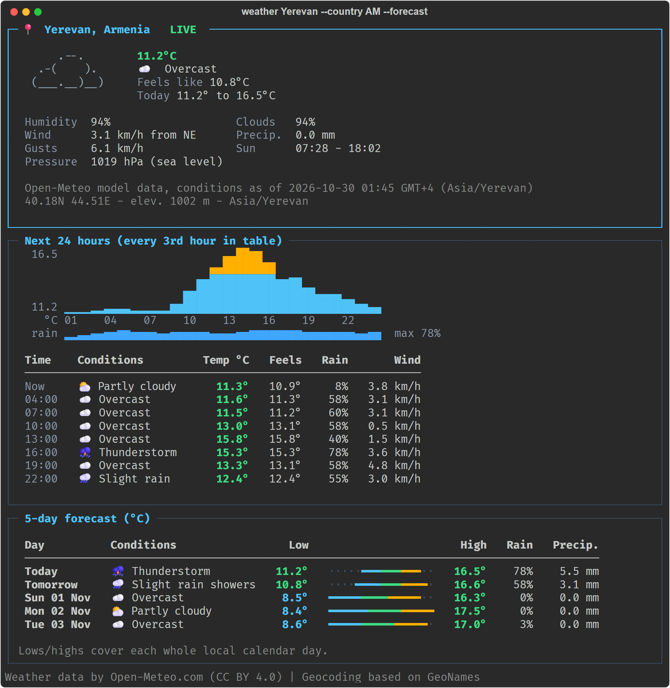
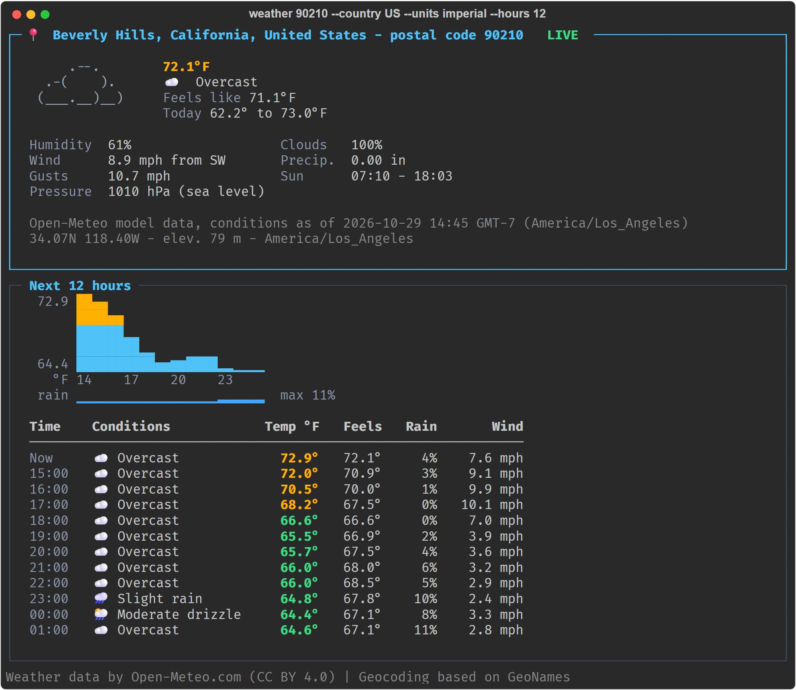
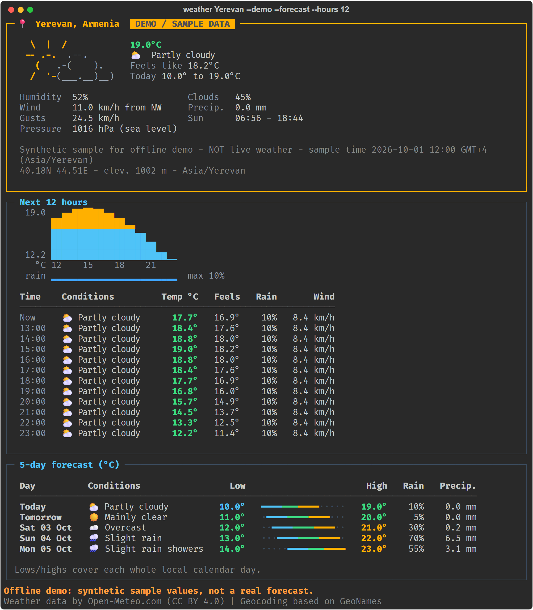

Type a city or postal code. Get beautiful, live weather right in your terminal.
Գրեք քաղաքի անուն կամ փոստային կոդ և ստացեք գեղեցիկ, իրական ժամանակի եղանակը հենց տերմինալում։
It is a command-line app: it runs in a terminal (PowerShell, Command Prompt or macOS/Linux Terminal), not in a browser. The pictures on this page are real captures of it running. Սա հրամանային տողի ծրագիր է. այն աշխատում է տերմինալում (PowerShell, Terminal), ոչ թե բրաուզերում։ Էջի նկարները ծրագրի իրական աշխատանքի պատկերներ են։
Download ThinkWeather.exe and double-click it. The interactive menu opens: type a city and press Enter. (If Windows shows “protected your PC”, click More info → Run anyway; the file is unsigned.)
Check with python --version. No account or API key needed.
> git clone https://github.com/GEV44/think-weather-cli.git > cd think-weather-cli # Windows > run.bat Yerevan --forecast # macOS / Linux $ ./run.sh Yerevan --forecast
The first run sets everything up (about a minute). After that it's instant.
# interactive menu > run.bat # other places, °F, ambiguous names > run.bat Paris > run.bat 90210 --country US --units imperial > run.bat Springfield --country US
On macOS/Linux use ./run.sh instead of run.bat.
A short showcase in English and in Armenian.Կարճ ներկայացում անգլերեն և հայերեն։
Everything the assignment asked for, plus every bonus.Առաջադրանքի բոլոր պահանջները և բոլոր բոնուսները։
Yerevan, “New York”, Երևան, 90210 or 00501. When a name is ambiguous, it asks instead of guessing.
Weather pictures, colours, and an hourly chart that fits your terminal width.
Hour by hour for up to 48 hours, plus a 5-day forecast with daily highs and lows.
Switch between Celsius and Fahrenheit instantly, without reloading.
Results are remembered for 10 minutes, so repeat lookups are instant.
Clear, friendly messages for typos or a lost connection, and an offline demo mode.
Captured from the running program, not mock-ups.Իրական ծրագրի պատկերներ, ոչ թե մակետներ։


One command. Python 3.11+, no account or API key.Մեկ հրաման. անհրաժեշտ է միայն Python 3.11+։
# download $ git clone https://github.com/GEV44/think-weather-cli.git $ cd think-weather-cli # Windows > run.bat Yerevan --forecast # macOS / Linux $ ./run.sh Yerevan --forecast
Every change is tested automatically on GitHub before it ships.